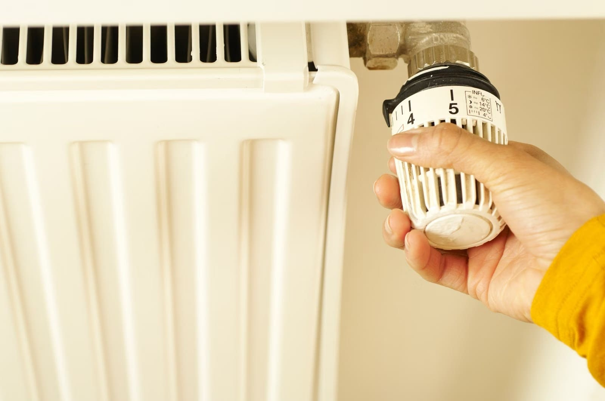

Kombi arıza, tamir ve bakımında Küçükçekmece'de hızlı ve temiz işçilik. Akşam geç saatte bozulsa da arayabilirsiniz.

★ 5,0 · 133 yorum"Mustafa ustanın eline sağlık 1 aydır çözemediğim sorunu 5 dakikada çözdü."
Anıl B. · Google yorumuKombinizle ilgili her sorun için tek numara.
Isıtmayan, sıcak su vermeyen ya da hata kodu gösteren kombilerin onarımı.
Kış öncesi kombi bakımı; daha az arıza, daha verimli ısınma.
Evinizin ısıtma sistemiyle ilgili sorular ve kontroller.
Google'da 133 yorum, ortalama 5,0 puan.
"Gece geç saatlerde kombimiz bozulmuştu Mustafa Usta'yı aradık bir saat içinde gelip sorunumuzu çözdü kombiyi çalışır halde bıraktı ve gitti uygun fiyatlı yaptı"
"Geç saat demedi koştu geldi tertemiz işçiliği var kısa sürede yaptı"
"Mustafa ustanın eline sağlık 1 aydır çözemediğim sorunu 5 dakikada çözdü."